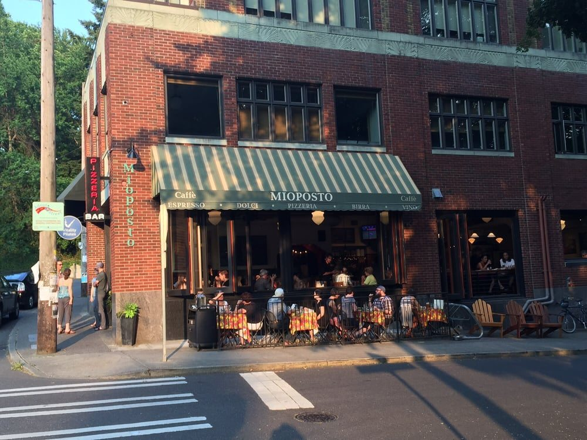

Let's go to... Seattle
Favourite restaurants in Seattle
- Mio posto Mio Posto
- Boss tea
- Mekong
My Favourite restaurant over all is Mio Posto. My friend Gabi introduced me to this restaurant and now I go there pretty often. One of the reasons I go there often is because it's 7 minute walk from my house.
Favourite parks

- Jefferson Park
- Mount Baker Park
- Seward Park
Out of these three options, Seward park is my Favourite. I love Seward because of all the trees and Lake Washington right besides it is super nice. When it's a hot summer day I would go there and swim with friends.
Favourite activity

- Escape Rooms
- Swimming at Rainier Beach
- Pottery Painting
My Favourite activity is to go to Rainier Beach and swim. After Covid the swimming secctions became free so it's nice. There is also the 7 Bus right infront of my house and it stops at the swiming pool.